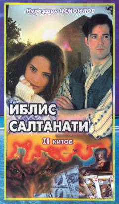

ISNuriddin Ismoilovning qiziqarli sarguzasht-detektiv romanining ikkinchi qismi.
Ushbu asar Nuriddin Ismoilovning mashhur sarguzasht-detektiv romanlar turkumiga kiruvchi ikkinchi kitobidir. Unda voqealar rivoji murakkablashib, qahramonlarning taqdiri va qasos olish yo'lidagi kurashlari tasvirlanadi.